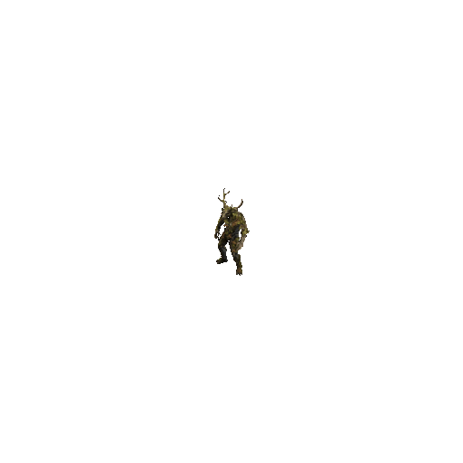

Créatures fantastiques
Des mythes, contes et légendes au jeu vidéo

Les Lutins
Petit personnage imaginaire malicieux et taquin.
Consulter la fiche →
Le Nain jaune
Personnage légendaire de très petite taille.
Consulter la fiche →
Le Gnome
Homme de petite taille et difforme.
Consulter la fiche →
La Dame blanche
Fantôme vêtue d'une robe de mariée blanche.
Consulter la fiche →
Le Windigo
Monstre cannibale des légendes algonquiennes.
Consulter la fiche →